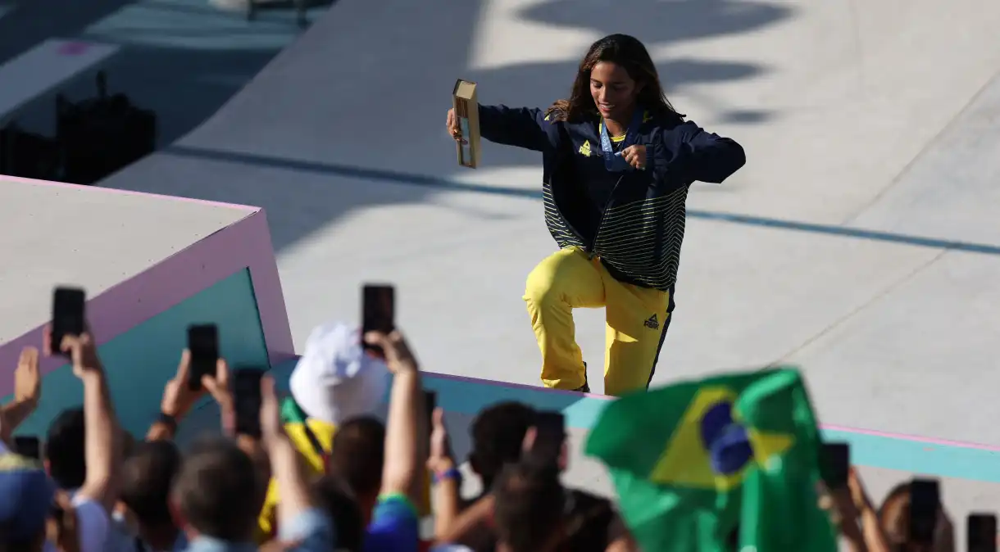

Filipi News🌎
Saiba quanto Rayssa Leal faturou com a medalha de bronze
Fadinha ficou com a terceira colocação no skate street feminino em Paris

Rayssa Leal celebra medalha no skate com torcida brasileira
Filipi Miranda, do Senai Zerbini
30/07/2024 ás 14:35
Rayssa Leal ganhou a medalha de bronze no skate street feminino na Olimpíada de Paris. Aos 16 anos, a Fadinha chegou à
sua segunda medalha olímpica. Em Tóquio, a skatista ficou com a prata.
Em cerimônia realizada na Casa Brasil, na capital francesa, Rayssa recebeu das mãos do presidente do COB, Paulo
Wanderley Teixeira, a premiação pela conquista: um cheque de R$140 mil reais.
O COB aumentou o valor da premiação em 40% com relação à Olimpíada passada. A maior recompensa oferecida em Paris
2024 é de R$ 350 mil, em caso de medalha de ouro individual.
No evento de premiação, Rayssa exaltou a importância da torcida brasileira em sua conquista.
“A gente vê todo mundo apoiando, todo mundo incentivando, e estar aqui na pista de Paris com toda essa energia é incrível”,
disse Rayssa.